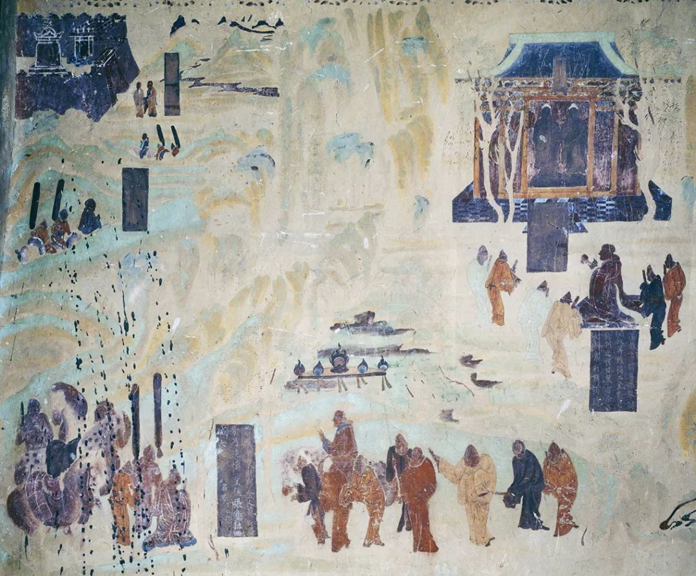

目录 · Содержание
第一节一带一路
Yídài-Yílù
«Один пояс — один путь»: содержание инициативы, принципы и результаты сотрудничества
丝绸之路经济带
sīchóu zhī lù jīngjìdài
Экономический пояс Шёлкового пути: от Чжан Цяня до инициативы 2013 года

开始阅读 →互动注释读本 · HSK 4–5 · 俄语生词注释
（一带一路篇）
«Ключевые слова Китая: Один пояс — один путь»
Yídài-Yílù
«Один пояс — один путь»: содержание инициативы, принципы и результаты сотрудничества
sīchóu zhī lù jīngjìdài
Экономический пояс Шёлкового пути: от Чжан Цяня до инициативы 2013 года

开始阅读 →生词保存在本机浏览器中，刷新页面也不会丢失。